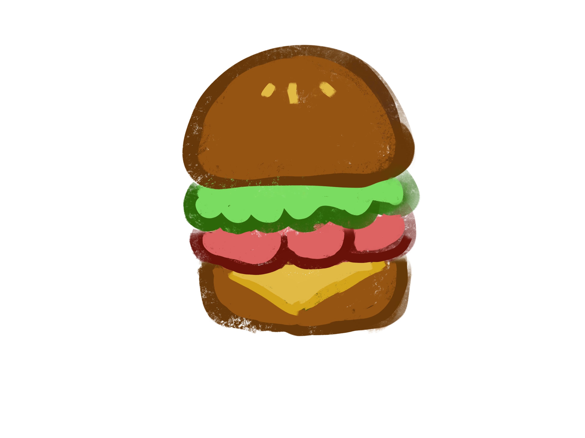

<div class="spacer s2"></div>
<div class="spacer s0" id="trigger"></div>
<div id="target">
	
	<a href="#" class="viewsource">view source</a>
</div>
<div class="spacer s2"></div>
<script>
	$(function () { // wait for document ready
		var flightpath = {
			entry : {
				curviness: 1.25,
				autoRotate: true,
				values: [
						{x: 100,	y: -20},
						{x: 300,	y: 10}
					]
			},
			looping : {
				curviness: 1.25,
				autoRotate: true,
				values: [
						{x: 510,	y: 60},
						{x: 620,	y: -60},
						{x: 500,	y: -100},
						{x: 380,	y: 20},
						{x: 500,	y: 60},
						{x: 580,	y: 20},
						{x: 620,	y: 15}
					]
			},
			leave : {
				curviness: 1.25,
				autoRotate: true,
				values: [
						{x: 660,	y: 20},
						{x: 800,	y: 130},
						{x: $(window).width() + 300,	y: -100},
					]
			}
		};
		// init controller
		var controller = new ScrollMagic.Controller();

		// create tween
		var tween = new TimelineMax()
			.add(TweenMax.to($("#plane"), 1.2, {css:{bezier:flightpath.entry}, ease:Power1.easeInOut}))
			.add(TweenMax.to($("#plane"), 2, {css:{bezier:flightpath.looping}, ease:Power1.easeInOut}))
			.add(TweenMax.to($("#plane"), 1, {css:{bezier:flightpath.leave}, ease:Power1.easeInOut}));

		// build scene
		var scene = new ScrollMagic.Scene({triggerElement: "#trigger", duration: 500, offset: 100})
						.setPin("#target")
						.setTween(tween)
						.addIndicators() // add indicators (requires plugin)
						.addTo(controller);
	})
</script>
